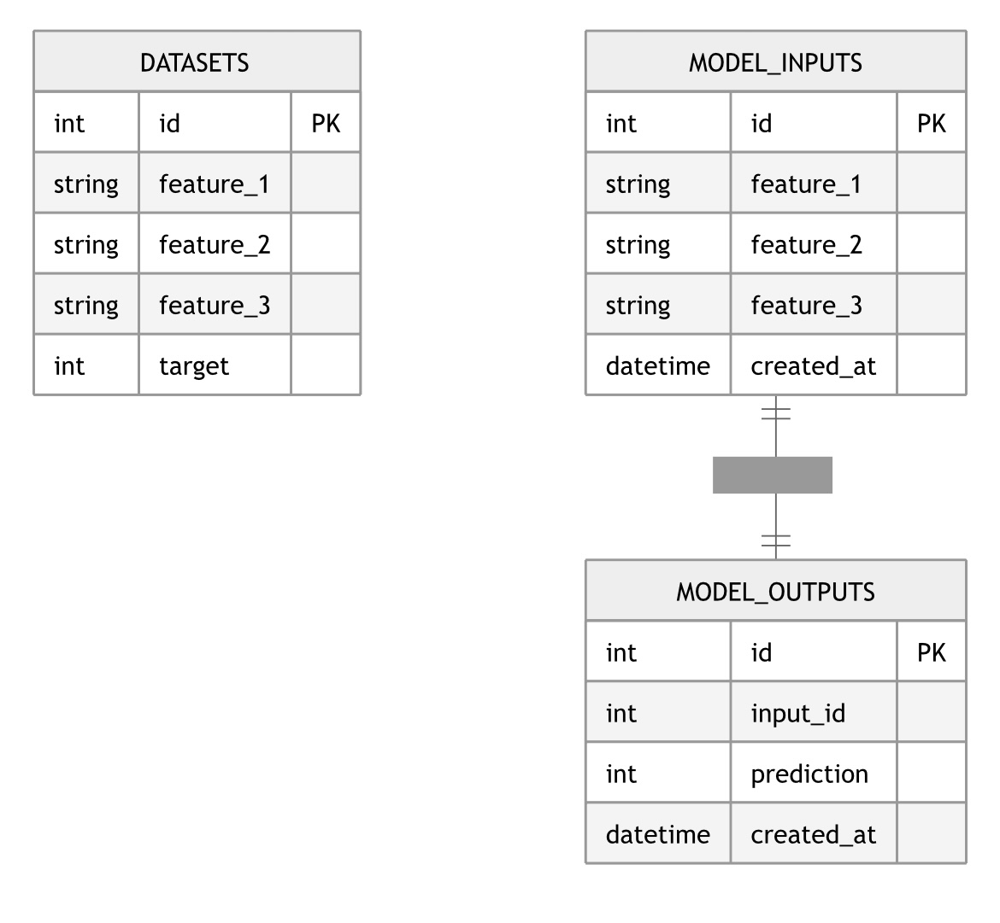

🏗️ Architecture du système
📌 Vue d’ensemble
Le projet Futurisys est une API de Machine Learning permettant de prédire le turnover des employés.
L’architecture repose sur un système complet intégrant : - une API FastAPI - un modèle de Machine Learning - une base de données PostgreSQL - une infrastructure Docker - un pipeline CI/CD
🧩 Composants du système
🔌 API FastAPI
- Expose les endpoints
/predictet/batch_predict - Transforme les données en JSON / DataFrame
- Charge le modèle ML au démarrage
- Retourne les prédictions
🤖 Modèle Machine Learning
- Modèle de classification supervisée (Scikit-learn)
- Entraîné sur des données RH
- Sauvegardé puis rechargé pour l’inférence
🗄️ Base de données PostgreSQL
- Stocke les inputs du modèle
- Stocke les prédictions générées
- Permet le suivi des décisions ML
🐳 Docker
- Conteneurisation de l’application
- Environnement reproductible
- Déploiement local et cloud simplifié
🔄 CI/CD (GitHub Actions)
- Tests automatiques à chaque push
- Validation du code
- Déploiement sur Hugging Face Spaces
🔁 Flux de données
Voici le flux global du système :

🎯 Résumé
- API → reçoit les requêtes
- ML → génère les prédictions
- DB → stocke les résultats
- CI/CD → automatise les déploiements
- Docker → garantit la reproductibilité